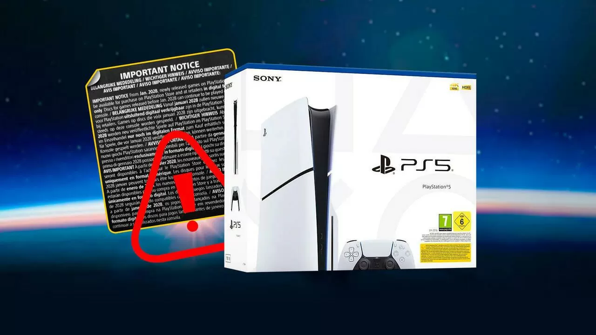

Sony estaría indicando con una pegatina en las PS5 a la venta que no habrá más juegos en formato físico a partir de 2028.

Según varios usuarios que han comprado recientemente la consola, la nueva versión de PS5 incluye una pegatina donde se menciona que el lector de discos podría dejar de ser compatible con futuros lanzamientos. Esto ha provocado que muchos jugadores piensen que Sony ya está preparando el terreno para abandonar definitivamente el formato físico.
Aunque la compañía no ha hecho un anuncio oficial, esta información coincide con rumores anteriores que apuntaban a que la próxima generación de PlayStation sería completamente digital. Algunos desarrolladores también han comentado que Sony está impulsando más herramientas enfocadas al mercado online y a las suscripciones.
Por ahora, solo queda esperar a que Sony confirme si realmente planea eliminar los juegos en disco o si simplemente se trata de un cambio temporal. La comunidad está dividida, ya que muchos jugadores siguen prefiriendo tener sus juegos en formato físico.